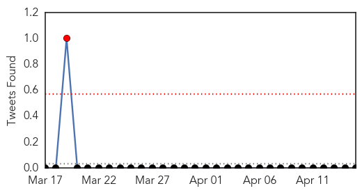
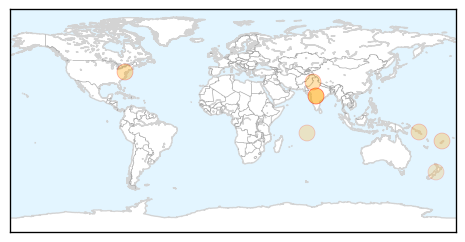
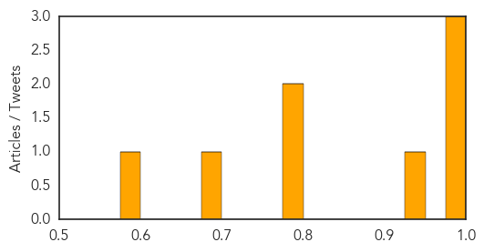
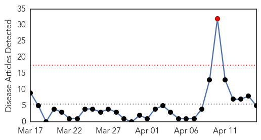
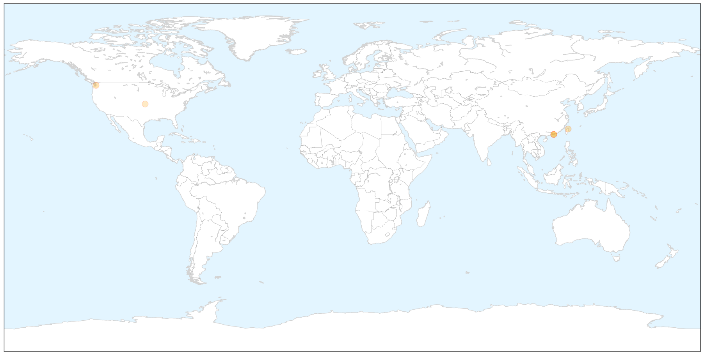

Dengue Fever
30-Day Web Trend
5 alerts, 2 warnings

30-Day Twitter Trend
1 alerts, 0 warnings

Article Locations
Article Confidences
Top Articles:
- 0.991
- Precautions against vector-borne diseases highlighted during World Health Day
- 0.989
- Pitt CVR and Sanofi Pasteur collaborate to assess the effectiveness of a dengue vaccine
- 0.977
- More than 600 malaria cases reported in Qatar last year
- 0.946
- Epidemic control: Hospitals told to send dengue patients’ data to Health Department
- 0.791
- Centre reports dengue cases
- 0.780
- Solomon Islands Flooding – UNICEF Responds to Urgent Water and Sanitation Needs - Solomon Islands
- 0.695
- International Atomic Energy Agency
- 0.578
- Evacuation centres in Solomons struggling to cope - UNICEF
Top Tweets:
-
No tweets found for Apr 15, 2014
Influenza
30-Day Web Trend
1 alerts, 0 warnings

30-Day Twitter Trend
1 alerts, 0 warnings

Article Locations

X

Article Confidences

Top Articles:
- 0.990
- Another Confirmed Case Of Bird Flu In Hong Kong
- 0.918
- Flu Scan for Apr 15, 2014
- 0.915
- NIAID Awards $5.3 Million to Seattle Children’s Research Institute in Conjunction with Micronics for Development of Global Surveillance of Influenza Strains at Point-of-Care
- 0.898
- H7N9 surveillance eases as risk reduces
- 0.689
- Scientists Publish Recipe For Making Bird Flu More Contagious
Top Tweets:
-
No tweets found for Apr 15, 2014